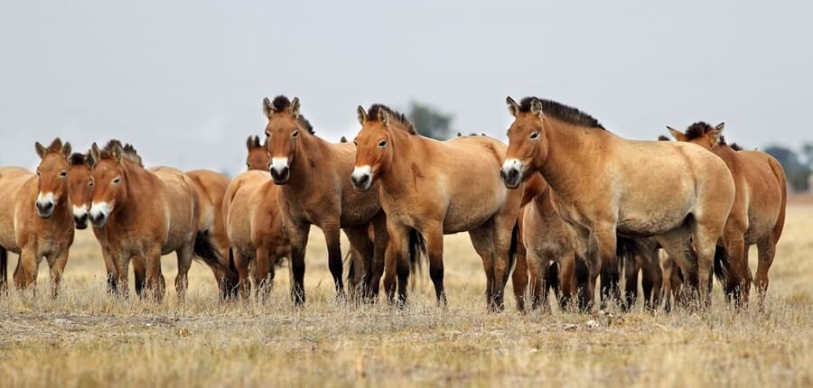
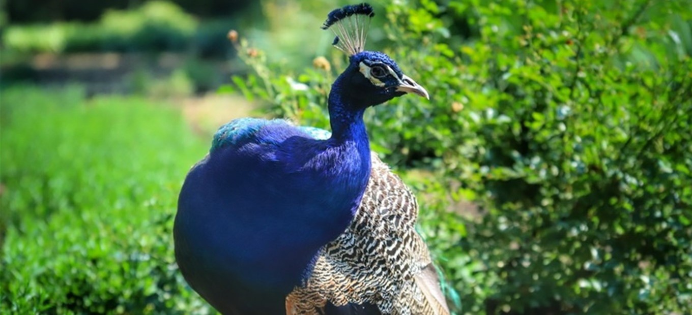
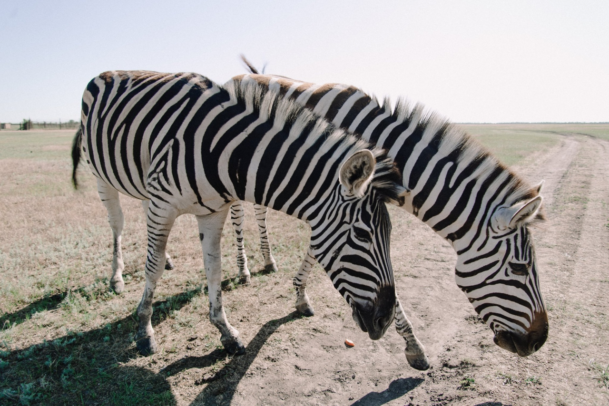

Асканія-Нова. Заповідні території під час війни.
Асканія-Нова — справжнє диво не лише Приазов’я, а й усієї України. Це найстаріший степовий біосферний заповідник планети та найбільша європейська степова заповідна територія. У тутешніх екосистемах налічується більше 500 видів вищих рослин і понад 3 тисячі видів тварин. У 1984 році рада ЮНЕСКО внесла Асканію до списку еталонних територій планети.
- Прогулянка заповідником
- Біорізноманіття
- Коні Пржевальського
- Різноманіття птах
- Заповідні території під час війни.
- «Українська природоохоронна група»
- Екоцид
Зa усіма цими титулами – титанічна праця багатьох людей: починаючи від засновника і до тих, хто опікується заповідником сьогодні, а також низка питань, що потребують негайного вирішення.
Наріжний камінь заповідника Асканія-Нова заклав нащадок німецьких колоністів, барон Фрідріх Фальц-Фейн у 1874 році. Після того, як 17-річний Фрідріх, що змалечку цікавився природою, успішно склав вступні іспити до гімназії, батьки вирішили нагородити сина за старання і подарували йому вольєр для птахів. Далі на їхньому подвір’ї почали з’являтись і степові тварини.
Згодом, вже подорослішавши, Фрідріх помітив, що вівці, яких він тримав на продаж, знищують степову рослинність у регіоні та загорівся бажанням зберегти ділянку степу в природному стані. Так хобі переросло у справу життя. У 1898 році Фальц-Фейн першим у світі вилучив з господарського використання частину своїх угідь та оголосив про відкриття заповідника. Із майже 5 тис га загальної території помістя, залишилось лише 3 тис га орних земель.
Практично всі прибутки від продажу овець та хутра поміщик витрачав на розвиток свого заповідника. За перші 25 років йому вдалося привезти сюди кенгуру, страусів, австралійських ему та тибетських яків. І вперше у світі сюди доправили коней Пржевальського.
Зрозуміло, що зберегти таке надбання — нелегка справа. Та наступники барона Фальц-Фейна не сиділи на місці. У 1919 році Асканія-Нова отримала статус народного заповідного парку, а наприкінці 20-х років тут організували центр сільськогосподарської та екологічної науки. У 30-х роках на території заповідника створили Всесоюзний інститут акліматизації та гібридизації.
Прогулянка заповідником
Сучасна територія заповідника розділена на три великі частини: Північну, Великий Чапельський Під та Південну. Також в Асканії-Новій є зоологічний та дендрологічний парки, науковий музей, ботанічний сад та орнітопарк.
Прогулянка Асканією-Новою — не маршрут одного дня. Величезна територія заповідника займає 33 тис га. Тут можна пересуватись пішки чи автомобілем у супроводі спеціалістів. Директор заповідника Віктор Гавриленко застерігає:
— Ні в якому разі не треба гратися з тваринами, якщо не знаєш їхньої поведінки. Опущені вуха — це вже поза загрози.
Вольєрний комплекс Асканії-Нової зараз не у вільному доступі. Він складається із величезних загонів по 6–12 км2 і екскурсії для широкого загалу тут не проводять.
Зоопарк Асканії на час свого заснування вважався зоопарком майбутнього, адже тварини тут живуть в умовах дуже наближених до дикої природи. Віктор розповідає:
— Тут можна досліджувати поведінку тварин, не їдучи, скажімо, кудись у Південну чи Центральну Африку, чи Північну Америку. Тварини можуть піти на контакт з нами.
Із екскурсіями у дендрологічний парк в Аксанії дещо простіше. Площа парку становить 50 тис га. Це — режимна територія. Сюди відвідувачі можуть потрапити лише у супроводі екскурсоводів. Асканійський дендропарк створений у безводному степу, практично непридатному для вирощування деревних рослин. Саме тому парк нерідко порівнюють з оазисом у пустелі.
Біорізноманіття
У заповіднику є не менше 1155 видів членистоногих, 7 видів земноводних та плазунів, 18 видів ссавців, у різні пори року пролітає понад 270 видів птахів, з яких 107 видів залишаються на гніздування. Крім того, тут ростуть 478 вищих рослин.
Великий Чапельський Під — обгороджена ділянка заповідного степу площею 24 тис га. Тут більшу частину року перебувають табуни диких копитних тварин на вільному випасі: коні Пржевальського, бурчеллові зебри, різні види антилоп, зебр тощо. Віктор сміється, що на огорожах — подвійні замки, адже тварини навчились їх відмикати.
На території Чапельського Поду мешкає найчисленніша у світі група коней Пржевальського. Тварини з’явились тут у 1899 році. Фрідріх Фальц-Фейн дуже хотів повернути дикого коня в степи України. Саме звідси ці тварини потрапили до Європи, а потім і до інших країн світу. На початку 60-х років минулого століття коні Пржевальського зникли з середовища дикої природи. Проте в Асканії-Новій їх продовжували розводити.
У 1998 році працівники біосферного заповідника розробили «Програму створення природної популяції коней Пржевальського в зоні Чорнобильської АЕС» і частину коней відвезли туди. Також чималу кількість представників цього рідкісного виду тварин Асканія-Нова віддала до заповідників по всьому світові.
Віктор стверджує: якщо тварини розмножуються, то це свідчить про те, що для них створено відповідні умови.
Вражають своїм різноманіттям птахи, що гніздяться на території заповідника, або зупиняються тут під час сезонних міграцій. Тут є білі та чорні лебеді, фламінго, журавлі, сірі куріпки, степовий орел. У вольєрах живуть африканські страуси, ему, нанду, дрохви, фазани, павичі, папуги тощо.
Директор хвалиться, що у заповіднику збереглись коричневі огари — вид, занесений до Червоної книги України. В Україні їх залишилось 32 пари. До вимираючих видів тварин та птахів Віктор ставиться з особливою турботою.
— Що робити з природою, яка створила для нас середовище існування? Де б люди не жили — на Півночі чи на Півдні — все рівно вони здійснюють свій вплив на навколишнє середовище. І наскільки ми зуміємо людей виховати шанобливо ставитися до середовища, залежить майбутнє наступних поколінь.
Заповідні території під час війни.
Сьогодні 44% площ усіх заповідників та національних парків України знаходяться на тимчасово окупованих територіях або у зоні бойових дій. Вести природоохоронну діяльність тут практично неможливо ні державним органам влади, ні громадським організаціям.
За даними Міністерства захисту довкілля та природних ресурсів, до 900 природоохоронних територій сьогодні окуповані або ж на їхній території ведуться бойові дії. Один із найбільших і найвідоміших з них — Асканія-Нова. Разом із Чорноморським біосферним заповідником, який також сьогодні охоплений війною, у 1988 році він став першим українським природоохоронним об'єктом, занесеним до списку ЮНЕСКО. Сьогодні вони обоє можуть зникнути через війну, розпочату вторгненням росії.
Інфраструктура зруйнована, проте працівники, що залишилися, продовжують як можуть займатися природоохоронною діяльністю
Військові дії в основному зосередилися в містах. Самих природних територій війна торкнулася менше, хоча, звичайно, масове переміщення техніки природоохоронними територіями було зафіксовано і для заповідників це неприпустимо. Це території, які спеціально охороняються від будь-якого впливу людини.
Найбільше постраждали адміністрації та інфраструктура заповідників. Декому з них довелося евакуюватись під обстрілами. Будинки ряду адміністрацій національних парків зруйновані або розграбовані. А це означає, що всю наукову та дослідницьку роботу на цих заповідних територіях вести тепер не можна. Що є катастрофа для природоохоронної діяльності, оскільки це безперервний процес, який не може бути поставлений на паузу. Все що було зроблене за десятиліття наукової роботи – повністю знищено.
«Українська природоохоронна група» організувала відкритий збір коштів для того, щоби покрити хоча б мінімальні витрати працівників заповідників. Коли ми говоримо, наприклад, про Асканію-Нову, то мова йде про 269 людей, які продовжують працювати на 33 тисячах гектарів, з яких 11 тисяч – це незаймана степова зона, на території якої діяльність людини має бути зведена до мінімуму.
Щоб проводити моніторинг цих територій, потрібно паливо, люди повинні бути здорові та ситі, готові продовжувати роботу. Тварини мають бути забезпечені кормами та ліками. Для цього потрібні гроші. Проте держава не може їм допомогти, адже переказ бюджетних коштів на тимчасово окуповані території заборонено. Тому громадським організаціям доводиться шукати можливість підтримати працівників. Багато хто з них продовжує роботу на свій страх і ризик.
Там, де проходить лінія фронту, природа знищується. Йде справжній екоцид
Частина заповідників та національних парків сьогодні перебуває на лінії фронту, яка також не стоїть на місці та зміщується по ходу бойових дій. Внаслідок боїв та масових обстрілів знищуються не лише міста, а й заповідні території.